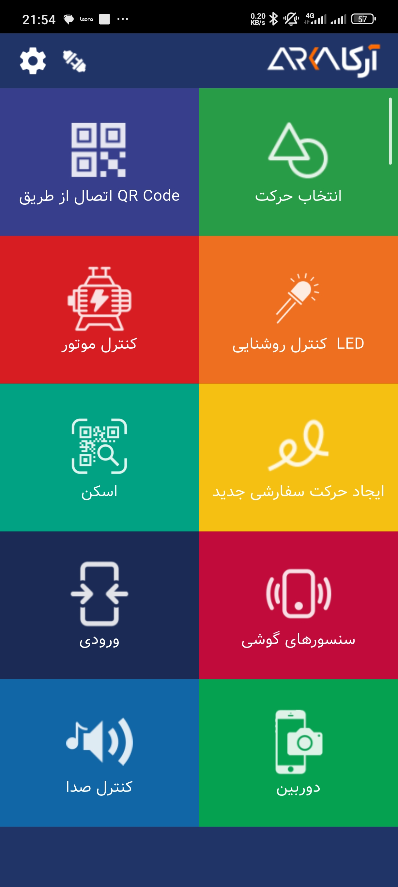
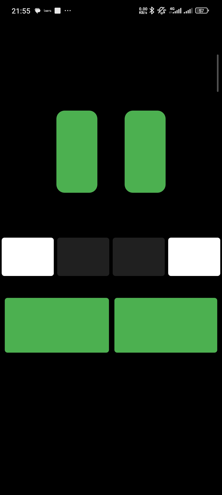
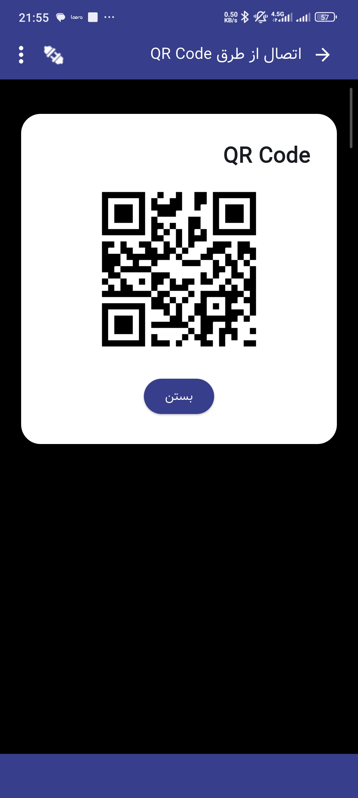
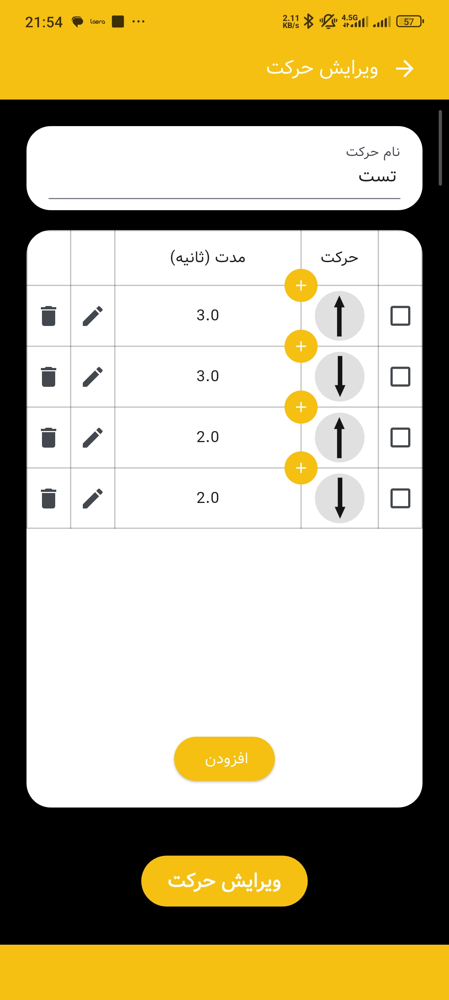
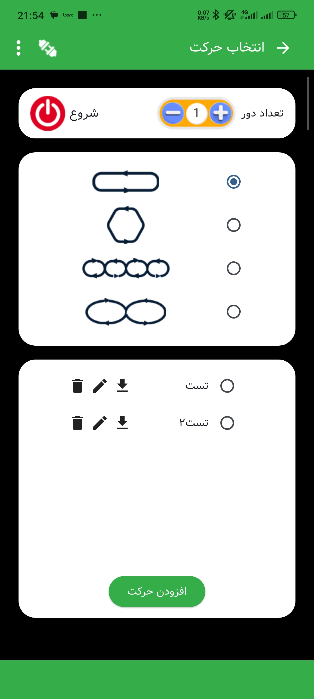
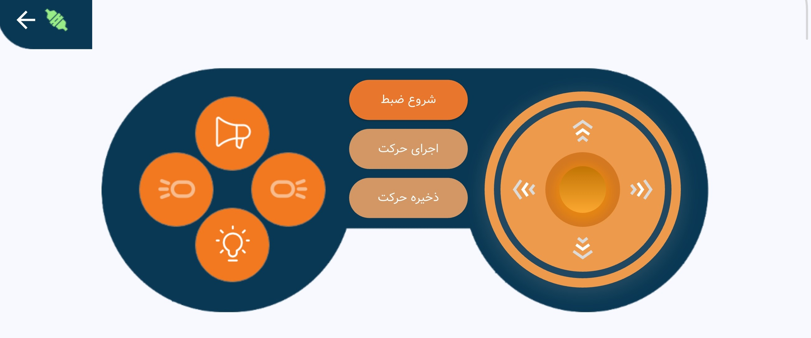

اپلیکیشن کنترل و برنامهریزی حرکت ربات
اپلیکیشنی برای کنترل و برنامهریزی حرکت یک ربات که امکان اجرای حرکتهای از پیش تعریفشده، ساخت حرکتهای جدید، کنترل ربات با گوشی دوم و ذخیرهسازی حرکتهای انجامشده را فراهم میکند. ارتباط دو گوشی از طریق Wi-Fi و QR Code انجام شده و امکان کنترل حرکت با Joystick نیز در اپلیکیشن پیادهسازی شده است.
کنترل و برنامهریزی حرکت ربات با اپلیکیشن موبایل
این پروژه یک اپلیکیشن موبایل برای کنترل و برنامهریزی حرکت ربات است که امکان اجرای حرکتهای از پیش تعریفشده، ایجاد حرکتهای جدید و کنترل ربات به صورت دستی را فراهم میکند.
حرکتهای ربات بر اساس ترکیب حرکتهای پایه و زمان اجرای آنها تعریف میشوند و کاربر میتواند حرکتهای موردنظر خود را ایجاد، ذخیره و در دفعات بعدی مجدداً بارگذاری و اجرا کند.
یکی از قابلیتهای اصلی اپلیکیشن، امکان استفاده از یک گوشی به عنوان ریموت کنترل است. دو گوشی از طریق Wi-Fi و با استفاده از QR Code به یکدیگر متصل شده و گوشی دوم امکان کنترل حرکت ربات با Joystick و ذخیره حرکتهای انجامشده را فراهم میکند.
در کنار بخش کنترل و برنامهریزی، امکاناتی برای تست عملکرد حسگرها، آرایههای محرک نوری، درایورها و موتورها و همچنین تغییر وضعیت چراغهای جلوی ربات نیز در اپلیکیشن در نظر گرفته شده است.
قابلیتهای اصلی اپلیکیشن
اجرای حرکتهای از پیش تعریفشده
انتخاب حرکتهای آماده، تعیین تعداد دفعات اجرا و امکان دانلود و استفاده مجدد از حرکتها.
تعریف و برنامهریزی حرکت جدید
ایجاد حرکتهای جدید با ترکیب حرکتهای پایه و تعیین زمان اجرای هر بخش از حرکت.
کنترل ریموت با گوشی دوم
اتصال دو گوشی از طریق Wi-Fi و QR Code و استفاده از گوشی دوم به عنوان ریموت کنترل ربات.
کنترل با Joystick و ذخیره حرکت
کنترل دستی حرکت با Joystick و ذخیره حرکات انجامشده برای بارگذاری و اجرای مجدد.
تست و عیبیابی اجزای دستگاه
تست عملکرد حسگرها، آرایههای محرک نوری، درایورها و موتورها از طریق اپلیکیشن.
مدیریت حرکتها و تنظیمات دستگاه
بارگذاری حرکتهای ذخیرهشده در حافظه گوشی، تغییر رنگ چراغهای جلو و مدیریت محتوای حرکتی.
جریان کنترل و برنامهریزی حرکت
کاربر میتواند یک حرکت از پیش تعریفشده را انتخاب کرده یا با ترکیب حرکتهای پایه، حرکت جدیدی ایجاد کند.
ترتیب حرکتها و زمان اجرای آنها مشخص شده و حرکت برنامهریزیشده برای اجرا آماده میشود.
در صورت نیاز، گوشی دوم با استفاده از QR Code و برقراری ارتباط از طریق Wi-Fi به عنوان ریموت متصل میشود.
کاربر با استفاده از Joystick حرکت ربات را کنترل کرده و حرکات انجامشده میتوانند برای استفاده مجدد ذخیره شوند.
حرکتهای ذخیرهشده یا دانلودشده در حافظه گوشی بارگذاری شده و امکان اجرای مجدد آنها فراهم است.
تکنولوژی و ساختار فنی
اپلیکیشن با استفاده از Flutter توسعه داده شده و ساختار آن شامل بخشهای مختلفی برای مدیریت حرکتها، کنترل ربات، تعریف برنامههای حرکتی و مدیریت تنظیمات دستگاه است.
حرکتها در برنامه به صورت ترکیبی از حرکتهای پایه و زمان اجرای هر حرکت تعریف میشوند. این ساختار امکان ایجاد، ذخیره و بارگذاری حرکتهای جدید را فراهم کرده و کاربر میتواند حرکتهای آماده یا دانلودشده را نیز در برنامه مدیریت و اجرا کند.
برای استفاده از گوشی دوم به عنوان ریموت کنترل، فرآیند اتصال دو گوشی با استفاده از QR Code و ارتباط Wi-Fi پیادهسازی شده است. همچنین رابط Joystick برای کنترل دستی و ثبت حرکتهای انجامشده در اپلیکیشن در نظر گرفته شده است.
نمایی از بخشهای پروژه
بخشی از رابط کاربری برنامه.





